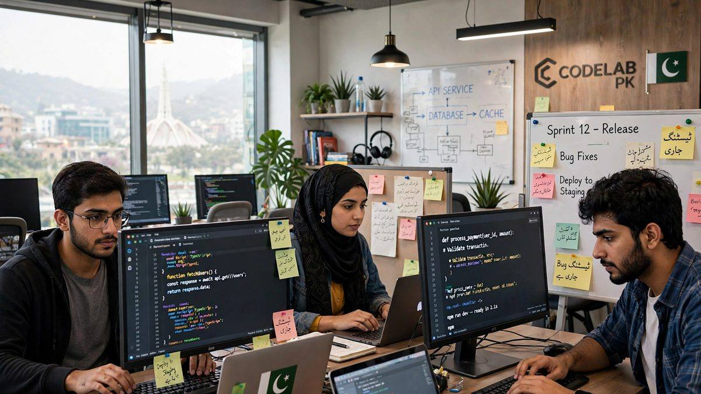

پاکستان کی آئی ٹی برآمدات 4.6 ارب ڈالر کا ریکارڈ — نوجوانوں کے لیے سنہرا موقع

پاکستان کی ٹیکنالوجی کی دنیا سے ایک کے بعد ایک اچھی خبر آ رہی ہے: ملک کی آئی ٹی اور آئی ٹی سے متعلق خدمات کی برآمدات مالی سال 2025-26 میں 4.6 ارب ڈالر کے ریکارڈ پر پہنچ گئی ہیں — جو پچھلے سال سے 20 فیصد زیادہ ہے۔ اسی دوران متحدہ عرب امارات کو پاکستانی آئی ٹی برآمدات میں 42 فیصد کا غیرمعمولی اضافہ ہوا ہے۔ یہ اعداد و شمار بتاتے ہیں کہ پاکستان ڈیجیٹل دنیا میں تیزی سے اپنی جگہ بنا رہا ہے — اور یہ نوجوانوں کے لیے کمائی کے نئے دروازے کھول رہا ہے۔
ریکارڈ برآمدات: اعداد و شمار کیا کہتے ہیں؟
تازہ ترین رپورٹس کے مطابق پاکستان کی آئی ٹی برآمدات نے مالی سال 2025-26 میں 4 ارب 60 کروڑ ڈالر کا ہندسہ عبور کیا۔ یہ پاکستان کی تاریخ میں سب سے زیادہ سالانہ آئی ٹی برآمدات ہیں۔
ماہانہ بنیادوں پر بھی رجحان مضبوط ہے: ستمبر 2026 میں برآمدات 43 کروڑ 50 لاکھ ڈالر رہیں — جو اب تک کا دوسرا سب سے زیادہ ماہانہ ریکارڈ ہے (پہلا ریکارڈ دسمبر 2025 میں 43 کروڑ 70 لاکھ ڈالر تھا)۔ ستمبر میں برآمدات سال بہ سال 18 فیصد اور ماہ بہ ماہ 10 فیصد بڑھیں۔ جولائی سے ستمبر کی سہ ماہی میں مجموعی برآمدات 1 ارب 25 کروڑ ڈالر رہیں، جو پچھلے سال کی اسی مدت سے تقریباً 18 فیصد زیادہ ہیں۔
یو اے ای: 42 فیصد اضافے کے ساتھ اہم منڈی
متحدہ عرب امارات پاکستان کی آئی ٹی کمپنیوں کے لیے تیزی سے ایک اہم علاقائی منڈی بنتا جا رہا ہے۔ مالی سال 2025-26 میں یو اے ای کو پاکستانی آئی ٹی برآمدات 42 فیصد بڑھ کر 53 کروڑ 60 لاکھ ڈالر ہو گئیں، جبکہ پچھلے مالی سال یہ رقم 37 کروڑ 60 لاکھ ڈالر تھی — یعنی ایک سال میں تقریباً 16 کروڑ ڈالر کا اضافہ۔
ابوظہبی میں "میڈ ان پاکستان" ٹیکنالوجی کی نمائش
اسی کامیابی کے پس منظر میں پاکستان نے 6 اور 7 اکتوبر 2026 کو ابوظہبی میں ہونے والی "اے آئی ایوری تھنگ گلوبل 2026" نمائش میں اپنی مصنوعی ذہانت اور ٹیکنالوجی کی صلاحیتوں کی نمائش کی۔ پاکستان سافٹ ویئر ایکسپورٹ بورڈ (PSEB) کے زیرِ اہتمام قائم پاکستان پویلین کا افتتاح یو اے ای میں پاکستان کے سفیر شفقت علی خان نے کیا۔
پویلین میں پانچ پاکستانی ٹیکنالوجی کمپنیوں نے اپنی مصنوعات پیش کیں، جن میں اے آئی ڈیٹا انٹیلیجنس، اے آئی سرویلنس (نگرانی)، اے آئی سیلز سلوشنز اور سوورین اے آئی سسٹمز شامل تھے۔ یہ دو روزہ نمائش 70 ممالک کے 500 سے زائد نمائش کنندگان اور 150 سرمایہ کاروں کو ایک جگہ لائی — پاکستانی کمپنیوں کو عالمی خریداروں اور سرمایہ کاروں سے براہِ راست رابطے کا موقع ملا۔
سفیر شفقت علی خان نے کہا کہ پاکستان کے ٹیک سیکٹر کو عالمی اے آئی تبدیلیوں کے ساتھ ہم آہنگ رہنا ہوگا، اور نوجوان نسل کو مصنوعی ذہانت، کوڈنگ اور جدید ڈیجیٹل مہارتوں سے لیس کرنا مستقبل کی عالمی ڈیجیٹل معیشت میں مقابلے کے لیے بنیادی شرط ہے۔
نوجوانوں کے لیے اس کا مطلب کیا ہے؟
یہ خبریں صرف اعداد و شمار نہیں — یہ پاکستان کے نوجوانوں کے لیے عملی مواقع کی نشاندہی کرتی ہیں:
- فری لانسنگ: عالمی منڈی میں پاکستانی ڈویلپرز کی مانگ بڑھ رہی ہے — عالمی بینک پہلے ہی پاکستان کو ڈیجیٹل خدمات کے سرفہرست پانچ عالمی فراہم کنندگان میں شمار کر چکا ہے۔
- اے آئی مہارتیں: نمائش میں جن شعبوں کی مانگ نظر آئی (ڈیٹا انٹیلیجنس، اے آئی سلوشنز) وہی مہارتیں سیکھنے والوں کے لیے سب سے زیادہ معاوضے والے مواقع پیدا کر رہی ہیں۔
- اسٹارٹ اپس: 150 بین الاقوامی سرمایہ کاروں کی موجودگی بتاتی ہے کہ اچھے آئیڈیاز کے لیے فنڈنگ کے دروازے کھلے ہیں۔
- چھوٹے شہروں کے لیے موقع: ٹیکنالوجی کی خوبصورتی یہ ہے کہ فیصل آباد یا ملتان میں بیٹھا ڈویلپر بھی دبئی یا لندن کے کلائنٹ کے لیے کام کر سکتا ہے۔
خلاصہ
4.6 ارب ڈالر کی ریکارڈ برآمدات، یو اے ای کو 42 فیصد اضافہ، اور ابوظہبی میں عالمی نمائش — یہ سب مل کر ایک ہی کہانی سناتے ہیں: پاکستان کی ڈیجیٹل معیشت ابھر رہی ہے۔ جو نوجوان آج اے آئی اور ٹیکنالوجی کی مہارتیں سیکھے گا، وہ کل کی اس معیشت کا حصہ ہوگا۔
ذرائع: جیو نیوز، میٹس گلوبل، پاکستان آبزرور، ٹیک ایکس، اسٹارٹ اپ پاکستان (اکتوبر 2026)